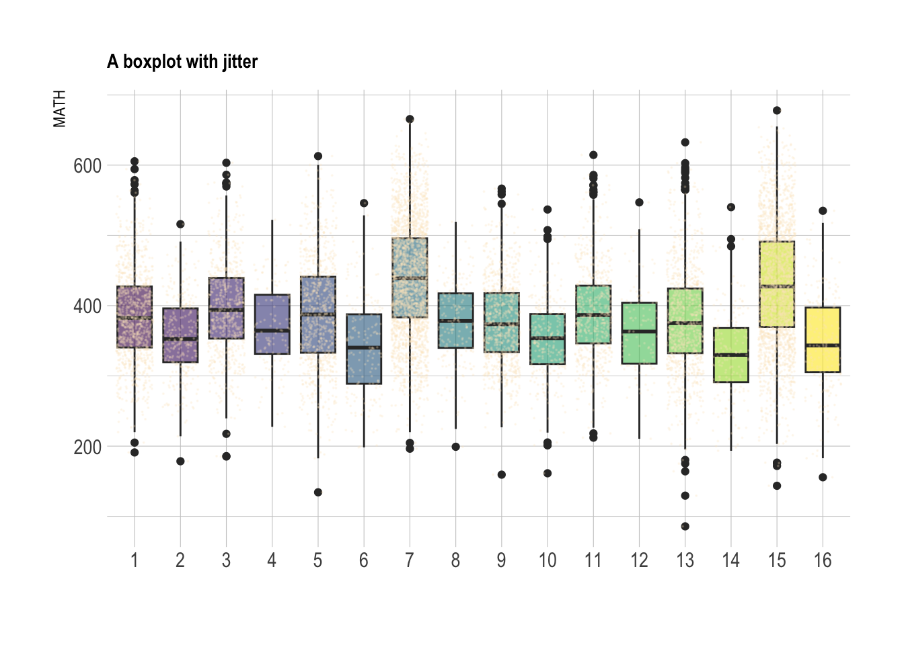

| Variable | N | Mean | Std. Dev. | Min | Pctl. 25 | Pctl. 75 | Max |
|---|---|---|---|---|---|---|---|
| HISCED | 12019 | 3.7 | 1.7 | 0 | 2 | 6 | 6 |
| HISEI | 11882 | 40 | 18 | 12 | 28 | 55 | 89 |
| MATH | 12098 | 401 | 80 | 86 | 345 | 454 | 721 |
| READ | 12098 | 390 | 79 | 181 | 332 | 444 | 666 |
| SCIE | 12098 | 414 | 70 | 196 | 363 | 461 | 685 |
Does inequality affect Mathematics achievement among Indonesian students: A MAIHDA approach
Introduction
Salah satu pertanyaan penting dalam dunia pendidikan Indonesia adalah seberapa besar kesenjangan dan ketimpangan dapat menjelaskan dan memprediksi prestasi belajar. Mengetahui sumber ketimpangan dapat menjadin rekomendasi yang penting untuk membuat rekomendasi kebijakan. Dalam kajian ketimpangan, ada beberapa pendekatan yang digunakan untuk mengukur ketimpangan. Salah satunya adalah pendekatan intersectionality. Pendekatan ini berasumsi bahwa ketimpangan bersumber pada situasi dimana individu berada dalam situasi intersectional dimana seorang yang memiliki karakteristik sosial ekonomi tertentu akan menjadi satu dalam intersection. Else-Quest and Hyde (2016)
Intersectional approach
Intersectionality merupakan kerangka analitik untuk memahami bagaimana keragaman identitas individu dalam hal sosial politik menghasilkan kombinasi yang unik dalam diskriminasi dan keistimewaan kesempatan. Cho, Crenshaw, and McCall (2013).@bauer2021intersectionality
Intersectional framework within multilevel model
Beberapa pendekatan yang digunakan dalam penelitian intersectionality antara lain Choo and Ferree (2010) Evans, Leckie, and Merlo (2020)
Methods
Data
Analytic Strategy
Results
Descriptive results
Berikut ini adalah hasil deskriptif masing-masing variabel.
Lebih lanjut lagi berikut adalah hasil deskriptif masing-masing strata yang dihasilkan.
| strata | n | mean_math | sd_math | min_math | max_math |
|---|---|---|---|---|---|
| 1 | 933 | 386.2398 | 65.38494 | 191.0502 | 605.4336 |
| 2 | 306 | 356.2301 | 55.79675 | 178.4993 | 515.9933 |
| 3 | 615 | 395.9771 | 66.49576 | 185.2481 | 603.3318 |
| 4 | 127 | 370.3284 | 59.74282 | 227.5502 | 522.1179 |
| 5 | 796 | 389.8282 | 77.30385 | 134.3329 | 612.8213 |
| 6 | 165 | 341.6695 | 69.66526 | 198.3034 | 545.9142 |
| 7 | 2318 | 439.5294 | 79.39958 | 196.4095 | 665.4756 |
| 8 | 189 | 377.2622 | 58.99202 | 199.1067 | 519.3781 |
| 9 | 806 | 377.7636 | 60.15873 | 159.4271 | 566.5815 |
| 10 | 281 | 352.4367 | 55.27099 | 161.3846 | 536.8347 |
| 11 | 588 | 390.7454 | 64.73241 | 212.0959 | 614.5004 |
| 12 | 103 | 366.3533 | 61.63525 | 210.4705 | 546.9564 |
| 13 | 858 | 379.8015 | 74.75256 | 85.8190 | 632.4589 |
| 14 | 167 | 329.7396 | 63.58228 | 193.4114 | 540.1809 |
| 15 | 2124 | 430.3141 | 84.69000 | 143.5882 | 677.8180 |
| 16 | 212 | 347.6000 | 68.97865 | 155.7126 | 534.9943 |
Multilevel model
Berikut adalah hasil estimasi multilevel model.
| MATH | MATH | |||||
|---|---|---|---|---|---|---|
| Predictors | Estimates | CI | p | Estimates | CI | p |
| (Intercept) | 377.30 | 362.74 – 391.85 | <0.001 | 414.71 | 399.34 – 430.08 | <0.001 |
| rural 1 | -54.46 | -69.46 – -39.46 | <0.001 | |||
| rural 2 | -31.23 | -36.57 – -25.90 | <0.001 | |||
| rural 3 | -3.27 | -8.89 – 2.34 | 0.253 | |||
| rural 4 | 15.26 | 9.67 – 20.85 | <0.001 | |||
| HISCED 1 | 2.77 | -6.38 – 11.92 | 0.552 | |||
| HISCED 2 | 6.60 | -2.24 – 15.45 | 0.143 | |||
| HISCED 3 | 19.63 | 9.52 – 29.75 | <0.001 | |||
| HISCED 4 | -1.95 | -5.51 – 1.62 | 0.285 | |||
| HISCED 5 | -52.58 | -63.67 – -41.49 | <0.001 | |||
| HISEI cat 1 | -22.27 | -36.53 – -8.01 | 0.002 | |||
| gender 1 | 9.80 | -4.45 – 24.05 | 0.178 | |||
| Random Effects | ||||||
| σ2 | 5411.76 | 5059.07 | ||||
| τ00 | 863.76 strata | 194.76 strata | ||||
| ICC | 0.14 | 0.04 | ||||
| N | 16 strata | 16 strata | ||||
| Observations | 10588 | 10588 | ||||
| Marginal R2 / Conditional R2 | 0.000 / 0.138 | 0.141 / 0.173 | ||||
RQ 1
#round(strata.var.model1/(strata.var.model1 + residual.var.model1)*100, 2)
rq1 <- round(726.50/(726.5+5644.55)*100,2)RQ2

RQ 3
#round(strata.var.model2/(strata.var.model2 + residual.var.model2)*100, 2)
#pcv <- round(((strata.var.model1-strata.var.model2) / strata.var.model1)*100, 2)
#pctg <- 100 - pcv
VPCadj <- round(564.82/(564.82 + 5562.7)*100, 2)
VPCadj[1] 9.22pcv <- round(((726.50-564.82)/726.50)*100, 2)
pcv[1] 22.25RQ 4
ranef(m1)$strata
(Intercept)
1 -5.7374815
2 2.8842010
3 -21.6363074
4 -5.1893206
5 0.9468748
6 -2.1223153
7 21.5080123
8 9.3463366
9 -2.5780257
10 8.5638969
11 -17.5168641
12 -0.4160436
13 2.3922085
14 -4.3493587
15 22.6215831
16 -8.7173964
with conditional variances for "strata" References
Cho, Sumi, Kimberlé Williams Crenshaw, and Leslie McCall. 2013. “Toward a Field of Intersectionality Studies: Theory, Applications, and Praxis.” Signs: Journal of Women in Culture and Society 38 (4): 785–810.
Choo, Hae Yeon, and Myra Marx Ferree. 2010. “Practicing Intersectionality in Sociological Research: A Critical Analysis of Inclusions, Interactions, and Institutions in the Study of Inequalities.” Sociological Theory 28 (2): 129–49.
Else-Quest, Nicole M, and Janet Shibley Hyde. 2016. “Intersectionality in Quantitative Psychological Research: I. Theoretical and Epistemological Issues.” Psychology of Women Quarterly 40 (2): 155–70.
Evans, Clare R, George Leckie, and Juan Merlo. 2020. “Multilevel Versus Single-Level Regression for the Analysis of Multilevel Information: The Case of Quantitative Intersectional Analysis.” Social Science & Medicine 245: 112499.